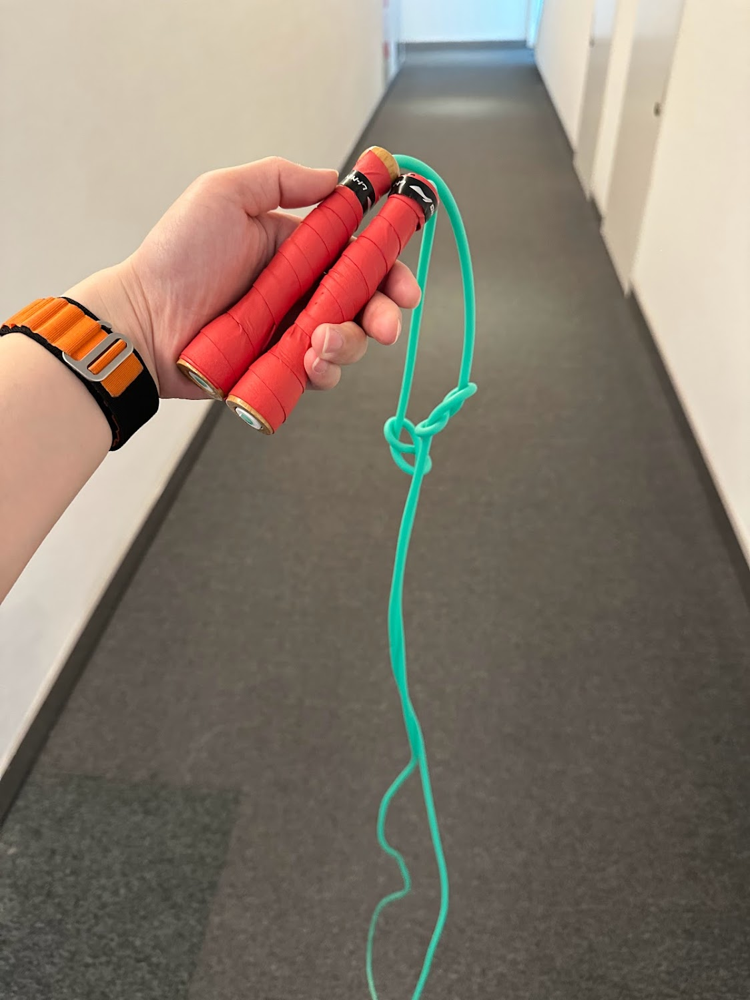
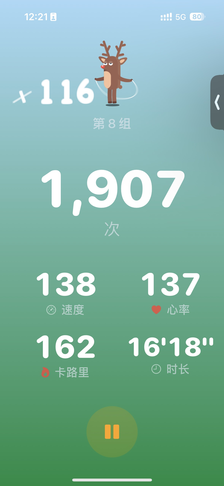
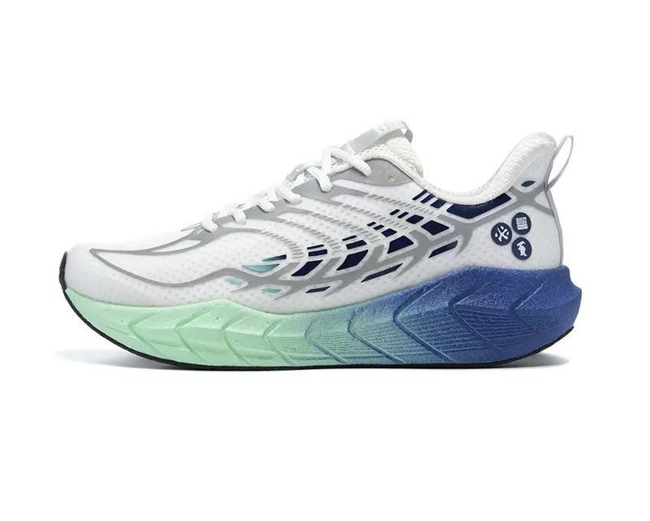
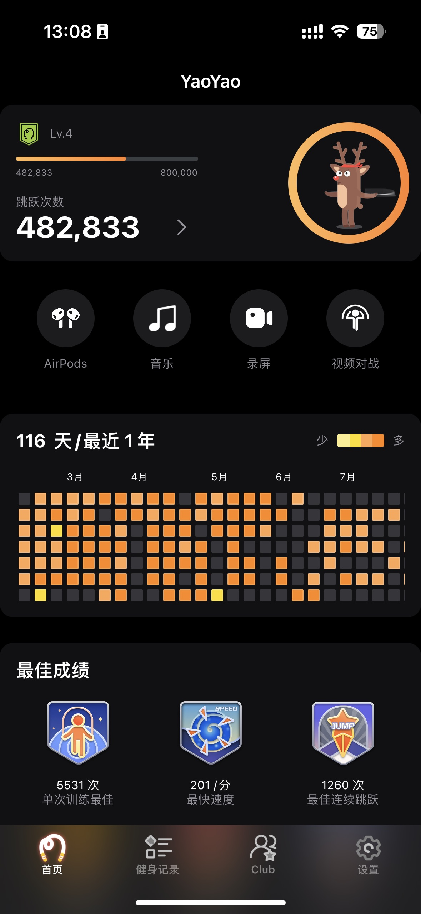

今年2月中旬，我开始尝试一个新运动：跳绳。
到今天已经持续半年多，最开始使用无绳跳绳跳2000个，逐渐到5000，一个多月后改成有绳跳2000，逐渐到5000。
虽然体重没有太大变化，但精神状态好多了，每次跳完后都是暴汗，多巴胺大量分泌，跳绳过程中也会冒出一些灵感，有工作上的也有生活上的。
最近换成了一个重量比较大的绳（半斤重），根据当天精神状态跳2500-3000个，分成250个一组，每组中间休息20秒。每次运动时间大概花25分钟，加上运动后换洗衣服总耗时约35分钟，每周平均运动3-4次。
用大重量绳的好处是可以顺便锻炼手臂，同时还能节约时间，追求质量不再追求数量，跳的太多对膝盖也有负担。因为绳子重量较大，即便数量少了一些出汗效果一点也不差。在换成用大重量跳绳的过程中我还发现对耐力上限的阈值可以不断调教，之前用大重量的绳最多跳500个胳膊就抡不动了，而且在中午吃饭时会手抖，现在可以持续3000个。
我在公司放了一件运动T恤、一条运动短裤，还有一双运动鞋。每天中午12点多换上运动鞋拿上运动衣和跳绳到公司办公楼28层——这一层是空的，在洗手间换好衣服，带上耳机打开YouTube随机播一集圆桌派，边听边跳。跳完后再去洗手间把汗擦干，换回便装，运动衣用清水rua一把晾回工位，第二天再用时也就干了。
回工位后休息一下就可以下楼吃饭了，这时候吃饭的人已经不多，可以找个地方悠闲的吃个饭。我通常去一个称重计价的自助餐厅，中午一点半后6折，不到20块钱就能吃的非常好，公司餐补30元，剩下10块还能用来喝杯咖啡😂。如果想在1点半后来这家吃，我回工位后会看一会书，或者写篇流水账，一点半前进行5到10分钟冥想，1点半准时下楼吃饭。
下边推荐几个跳绳过程中使用的装备：
跳绳
跳绳一共买了6、7条，最推荐的是超飞跃家的。我买了两条超飞跃，一条6mm 的，一条8mm，8mm 的那条有半斤重。
我将6mm 的打了个结，可以稍微提高一些摇绳时的惯性。

下边这条是8mm 的：

6mm 的价格是69.9，8mm 的价格是130，从京东购入。
强烈建议再从拼多多买羽毛球拍防汗带把手柄缠上，这样手感非常好。
运动监控
我用 AppleWatch 采集心率，通过 YaoYao 这个跳绳专用 App 在运动期间查看心率并进行间歇训练计数。
我会将心率心率控制在135左右，中间会有几十秒努力将心率提升至极限150+，有效训练心肺功能。


AirPods Pro2 耳机
因为是在室内，摇绳的声音就比较大，再加上升级成半斤重的跳绳后，甩绳子的声音整个楼层都能听到，带上 AirPods Pro2 开启降噪整个空间都是我的。
每次跳绳都会听一集圆桌派，既可以在运动过程中分散坚持不住时的注意力，又可以长见识，听听大咖们思考问题的方式。YouTube 已经完全学会了我的喜好，每次中午只要一打开它，列表中第一个一定是一集我没有听过的圆桌派，而且不是按顺序播放的甚至推荐的不是同一季。
鞋
我跳绳穿的是一双国产品牌的运动鞋，叫「必迈」，具体型号是远征者4.0Plus。因为非常舒服我买了两双，一双放公司专门用来在中午跳绳用，另一双放在家运动或者散步时穿。第一双是半年前买的价格是330，第二双是前两周买的，价格降到了295，都是在拼多多买的。
我没有穿过非常贵的运动鞋，但我可以说这双鞋在300这个价位内绝对是无敌的存在，鞋子很轻、鞋底较厚且非常有弹性。

跳绳是项对场地要求很低的运动，只需要2平米的空间就可以开始，枯燥的时候还可以加上各种花式动作，比如下边这个视频就非常酷炫，一看就会一学就废。
看了下今天的数据，我已经累计跳了48万次，继续加油。
